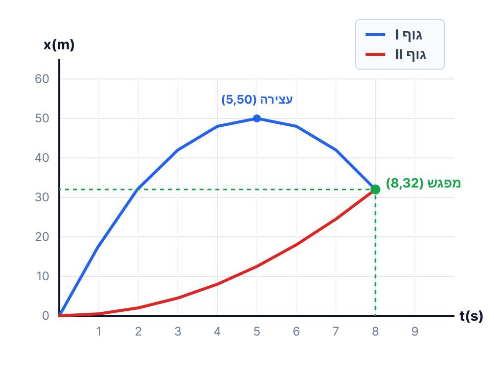

[תמונת השאלה המקורית]לא נמצאה תמונה בשם question-image.png באותה תיקייה.
זהירות! תפיסה שגויה נפוצה
תלמידים רבים נוטים לחשוב שברגע שהמהירות של גוף מתאפסת, הוא בהכרח נמצא "במנוחה" ושגם התאוצה שלו באותו הרגע היא אפס. זוהי טעות! על פי החוק הראשון של ניוטון, גוף מוגדר כנמצא במנוחה (התמדה) רק אם שקול הכוחות עליו הוא אפס, מה שאכן אומר שהתאוצה היא אפס. אבל... גוף יכול להיות בתאוצה פעילה ועדיין לחצות את נקודת האפס של המהירות.
לדוגמה בשאלה שלנו: נסתכל על גוף I. בשנייה \( t = 5\text{ s} \) המהירות הרגעית שלו בדיוק מתאפסת (\( 0\text{ m/s} \)), רגע לפני שהוא משנה את כיוון התנועה שלו ושב לאחור. עם זאת, הוא אינו באמת במנוחה! התאוצה שלו הייתה ונשארה קבועה: \( -4\text{ m/s}^2 \) כל הזמן. הכוח שפועל עליו לא פסק אפילו לשבריר שנייה, והוא זה שגורם לו מיד לאחר מכן לנוע לכיוון הנגדי. מהירות רגעית אפס אינה מעידה על תאוצה אפס בנקודה זו!
דוגמה קלאסית נוספת: חישבו על גוף שנזרק אנכית כלפי מעלה. כאשר הגוף מגיע לשיא הגובה, הוא נעצר לרגע והמהירות הרגעית שלו מתאפסת (\( v = 0 \)). אך האם התאוצה שלו היא אפס? ממש לא! כוח הכובד ממשיך לפעול עליו כל הזמן, ולכן גם בשיא הגובה התאוצה שלו היא התאוצה \( g \) שכיוונה כלפי מטה. אם התאוצה הייתה מתאפסת בשיא הגובה, משמעות הדבר היא שאין כוח שמושך אותו חזרה, והגוף פשוט היה נשאר לרחף באוויר לנצח!
סעיף א'
מה נתון:
מוצג בפנינו גרף מהירות-זמן (v-t) של שני גופים, I ו-II. מוגדר בשאלה כי "מהירות ימינה מוגדרת כחיובית". היחידות בגרף הן \(\text{m/s}\) ו-\(\text{s}\), כלומר אנו כבר נמצאים במערכת יחידות MKS ולכן אין צורך בהמרת יחידות.
מה מחפשים:
עלינו לבחור מבין שלושה משפטים נתונים את המשפט המתאר נכונה את כיווני התנועה של הגופים ולנמק את הבחירה.
עקרונות בשימוש:
הקשר שבין כיוון התנועה לסימן המהירות: כאשר \( v > 0 \) הגוף נע בכיוון החיובי (ימינה)כאשר \( v < 0 \) הגוף נע בכיוון השלילי (שמאלה)
פתרון צעד-אחר-צעד:
נבחן את שני הגופים לפי הגרף:
גוף II: הגרף שלו מתחיל ממהירות 0 ועולה. הוא נמצא תמיד מעל ציר הזמן (\( v_{II} \ge 0 \)), ולכן גוף זה נע אך ורק ימינה לאורך כל התנועה המוצגת.
גוף I: הגרף שלו מתחיל בערך חיובי (\( v = 20\text{ m/s} \)). כלומר, בתחילת התנועה הוא נע ימינה. בנקודת החיתוך עם ציר הזמן הגוף עוצר רגעית, ולאחר מכן המהירות שלו הופכת לשלילית (\( v_{I} < 0 \)). לכן, בחלק השני של תנועתו הוא נע שמאלה.
מסקנה זו מתאימה בדיוק למשפט מספר 2.
מסקנה: המשפט הנכון הוא משפט 2: גוף II נע ימינה, גוף I נע ימינה בהתחלה ולאחר מכן נע שמאלה.
💡 טיפ מורה:
תלמידים רבים נוטים להתבלבל ולחשוב שאם הגרף "יורד" (שיפוע שלילי), משמעות הדבר שהגוף נע שמאלה. חשוב להפריד: הירידה של הגרף מעידה על כך שהתאוצה שלילית (הגודל האלגברי של המהירות קטן). כיוון התנועה נקבע אך ורק לפי הערך בציר ה-v (מעל או מתחת לציר האופקי)!
סעיף ב'
מה נתון:
נוכל לחלץ נקודות מתוך הגרף:
עבור גוף I: הנקודה ההתחלתית היא \((0, 20)\) ונקודת החיתוך המסומנת היא \((4, 4)\).
עבור גוף II: הנקודה ההתחלתית היא \((0, 0)\) ונקודת החיתוך היא \((4, 4)\).
מה מחפשים:
חישוב התאוצה של כל אחד מהגופים: \( a_I \) ו- \( a_{II} \).
נוסחאות מהדף:
התאוצה הממוצעת (שהיא קבועה במקרה זה כי הגרפים הם קווים ישרים) מוגדרת כשיפוע של גרף המהירות-זמן:
מסקנה: התאוצה של גוף I היא \(-4\text{ m/s}^2\), והתאוצה של גוף II היא \(1\text{ m/s}^2\).
💡 טיפ מורה:
היזהרו מהמילה "תאוטה"! תאוצת גוף I היא אכן שלילית (\(-4\text{ m/s}^2\)). מכיוון שהוא מתחיל עם מהירות חיובית, התאוצה השלילית גורמת לכך שגודל המהירות שלו קטן (עד שהוא נעצר ומשנה כיוון). תמיד עדיף לתאר את השינוי ב"גודל המהירות" במקום להשתמש במושגים מבלבלים כמו תאוטה.
סעיף ג'
מה נתון:
על סמך סעיפים קודמים, יש לנו את המהירויות ההתחלתיות והתאוצות:
גוף I: \( v_{0I} = 20\text{ m/s} , a_I = -4\text{ m/s}^2 \)
גוף II: \( v_{0II} = 0\text{ m/s} , a_{II} = 1\text{ m/s}^2 \)
מה מחפשים:
האם קיים רגע נוסף (מלבד \(t=4\text{ s}\) שכבר ראינו בגרף) שבו גודל המהירות של שני הגופים שווה? אם כן, מצאו אותו.
נוסחאות מהדף:
משוואת מהירות כפונקציה של הזמן בתנועה שוות-תאוצה:
\( v = v_0 + at \)
פתרון צעד-אחר-צעד:
כדי לדרוש שוויון של גודל המהירות (Speed), עלינו להשתמש בערך מוחלט, שכן גודל מתעלם מכיוון המהירות (הסימן שלה). תחילה, נבנה את משוואות המהירות-זמן לכל גוף:
מסקנה: כן, קיים רגע כזה. הרגע שבו גודל המהירויות שווה הוא \(t = 6.67\text{ s}\).
💡 טיפ מורה:
הבנת ההבדל בין "מהירות" (Velocity - וקטור הכולל כיוון) לבין "גודל מהירות" (Speed - סקלאר) היא קריטית. ברגע \(t=6.67\text{ s}\) גוף II נע ימינה במהירות של \(6.67\text{ m/s}\), ואילו גוף I כבר החל את תנועתו שמאלה ונע במהירות של \(-6.67\text{ m/s}\). הגדלים שלהם זהים!
סעיף ד'
מה נתון:
נתון חדש: ברגע \(t=0\) שני הגופים נמצאים בראשית הצירים, כלומר \(x_{0I} = 0\) ו- \(x_{0II} = 0\). בנוסף, נרכז את הנתונים שמצאנו בסעיפים הקודמים שבעזרתם נבנה את משוואות התנועה. עבור גוף I: \(v_{0I} = 20\text{ m/s}, a_I = -4\text{ m/s}^2\). עבור גוף II: \(v_{0II} = 0\text{ m/s}, a_{II} = 1\text{ m/s}^2\).
מה מחפשים:
את המרחק המוחלט בין שני הגופים בנקודת הזמן הספציפית שבה מהירותו של גוף I היא אפס.
נוסחאות מהדף: \( v = v_0 + at \)\( x = x_0 + v_0t + \frac{1}{2}at^2 \)\( d = |x_I - x_{II}| \)
פתרון צעד-אחר-צעד:
שלב 1: מציאת רגע העצירה של גוף I
תחילה עלינו למצוא את נקודת הזמן שבה מהירותו של גוף I מתאפסת. נציב את הנתונים שלו במשוואת המהירות ונדרוש \(v_I = 0\):
כדי לדעת היכן נמצא כל גוף ברגע העצירה, נבנה תחילה את משוואת המקום-זמן הכללית לכל אחד מהם. נעשה זאת על ידי הצבת נתוני ההתחלה (\(x_0, v_0, a\)) בנוסחה המקורית.
מסקנה: המרחק בין שני הגופים בזמן שגוף I עוצר הוא \(37.5\text{ m}\).
💡 טיפ מורה:
האם ידעתם שאפשר לפתור זאת גם בעזרת השטחים בגרף? "השטח הכלוא בין גרף מהירות-זמן לבין ציר הזמן שווה להעתק הגוף". נסו לחשב את שטח המשולש הגדול של גוף I עד \(t=5\), ואת שטח המשולש של גוף II עד אותו זמן. תקבלו בדיוק את אותן התוצאות, וזו דרך נהדרת לאמת את הפתרון שלכם בבחינה!
סעיף ה'
מה נתון:
אנו ממשיכים עם משוואות המקום כפונקציה של הזמן שבנינו בסעיף הקודם: \( x_I(t) = 20t - 2t^2 \) \( x_{II}(t) = 0.5t^2 \)
מה מחפשים:
מתי (באיזה רגע \( t \)) והיכן (באיזה מיקום \( x \)) ייפגשו הגופים.
עקרונות בשימוש:
התנאי הקינמטי למפגש בין שני גופים הנעים באותה מערכת צירים הוא שוויון המקומות שלהם באותו הזמן:
\( x_I(t) = x_{II}(t) \)
חישוב צעד-אחר-צעד:
נשווה את שני ביטויי המקום שכתבנו, ונעביר אגפים:
\[ 20t - 2t^2 = 0.5t^2 \]
\[ 20t - 2.5t^2 = 0 \]
נוציא גורם משותף \( t \):
\[ t(20 - 2.5t) = 0 \]
המשוואה מתאפסת עבור שני זמנים. הראשון הוא \( t=0 \), שזו נקודת ההתחלה המשותפת הנתונה לנו. הזמן השני ייתן את רגע המפגש הבא:
💡 טיפ מורה:
חשבו על הסיטואציה בצורה פיזיקלית: גוף I זינק קדימה במהירות עצומה של 20 מטר לשנייה אבל מיד החל לאבד ממהירותו. גוף II התחיל ממנוחה אבל צובר מהירות בהתמדה. גוף I מגיע למרחק של 50 מטר (ב-\(t=5\)), עוצר שם, ומתחיל "לנסוע רוורס" חזרה. בדיוק בשלב החזרה שלו, הוא פוגש את גוף II העיקש שהמשיך להתקדם קדימה!
סעיף ו'
מה נתון:
כל משוואות הקינמטיקה ונקודות המפתח שמצאנו עד כה:
התחלה ב- \((0,0)\), גוף I מגיע למקסימום ב- \((5, 50)\), הגופים נפגשים ב- \((8, 32)\).
מה מחפשים:
סרטוט מדויק וברור של גרף המקום כפונקציה של הזמן (x-t) עבור שני הגופים באותה מערכת צירים מתחילת התנועה ועד רגע המפגש.
עקרונות בשימוש:
גרף מקום-זמן עבור תנועה בעלת תאוצה קבועה הוא פרבולה:
עבור \( a > 0 \) (גוף II), הפרבולה "צוחקת" (קעורה כלפי מעלה).
עבור \( a < 0 \) (גוף I), הפרבולה "בוכה" (קעורה כלפי מטה).
סרטוט הגרף:
בנינו את הגרף הבא על פי הנקודות המחושבות. ציר ה-X מייצג את הזמן בשניות, וציר ה-Y את המקום במטרים.

[גרף מקום-זמן]לא נמצאה תמונה בשם image-6.png באותה תיקייה.
💡 טיפ מורה:
הסתכלו על שיפועי הגרפים ששירטטנו! שיפוע של גרף מקום-זמן שווה למהירות.
בגרף של גוף I (הכחול), השיפוע בהתחלה גדול וחיובי, הולך ומתמתן עד שהוא מתאפס בדיוק ב-\(t=5\text{ s}\) (שם הראנו שהגוף נעצר), ולאחר מכן השיפוע הופך לשלילי (הגוף נע שמאלה). הכל מתחבר לשלמות פיזיקלית!
נוסח השאלה המקורית
[תמונת השאלה המקורית]לא נמצאה תמונה בשם question-image.png.